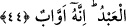
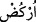

Kâşifî der ki: Rahmet-i ilâhî ile rahatlığa ulaşmak için önce ateş gibi olan sabır
gerekir.
Sabret ki, kurtuluşun anahtarıdır bu.
Sabrın anahtarı kimin elindeyse,
Mutlaka maksadının hazîne kapısını açar.
Akşamın sıkıntı karanlığına sabret,
Yavaş yavaş sabah, perdeden yüz gösterir.
Rivâyete göre Eyyûb’un (a.s.) hastalığı esnâsında zevcesi Rahme (evden) gitmişti ve
geç geliyordu. Eyyûb ona yüz sopa vurmaya yemin etti. Rahmet ufkundan iyileşme
sabahının beyazlığı yüz gösterince, Eyyûb sağlık ve gençliğine geri döndü ve yeminini
yerine getirmek istedi. Cenâb-ı Hak’tan hitap geldi:
44. Eline bir demet sap al da onunla vur, yeminini böyle yerine getir. Gerçekten
biz Eyyûb’u sabırlı (bir kul) bulmuştuk. O, ne iyi kuldu! Dâimâ Allah’a yönelirdi.
“Eline bir demet sap al da…”
el-İrşâd’da der ki: Bu ifâde, ya (
) fiiline ya da, (
)’ takdiriyle (
)’ya
ma’tuftur. Bu durumda mânâsı “Hibe ettik ve “eline bir demet sap al” dedik, şeklinde
olur.
Lâfza göre birincisi daha muhtemel iken mânâya göre ikincisi daha çok ihtimal
dâhilindedir. Zira böyle bir emir ancak sağlığına kavuştuktan sonra verilmiş olabilir. (
), bir demet saptır. Buna benzer bir görüş de el-Müfredât’ta dile getirilir: (
),
reyhan veya ot demetidir. Gerçekte ne anlama geldiği tam olarak anlaşılamayan rüyalar
da (
)’a benzetilir.
Kâşifî der ki: Eline bir demet hurma çubuğu ya da kuru ot destesi al da böylece yüz
sayısını tamamlamış ol. Keşfü’l-esrâr’da şöyle der: Müfessirler derler ki: İblis bir
tabib görünümüyle yolun başında oturmuş hastaları tedavi ediyordu. O sırada Eyyûb’un
karısı da gelip İblis’e: Bir hastamız var, kendisinde de şöyle şöyle bir hastalık
sözkonusu. Onu da tedavi eder misin? dedi. İblis cevaben: Evet onu tedavi eder, şifâsını
veririm, ama iyileşince bana gelip ‘beni sen iyileştirdin’ demesi şartıyla. Sizden başka
bir şey istemem, dedi. Karısı gelip, duyduğu şeyi kendisine nakledince Eyyûb, o tabibin
şeytan olduğunu ve kendisini yoldan çıkarmak istediğini anladı. ‘Vallahi!’ dedi, karısına,
‘bir iyileşirsem, sana yüz sopa vuracağım!’ Onun bu sözü üzerine, Cibrîl (a.s.) gelip